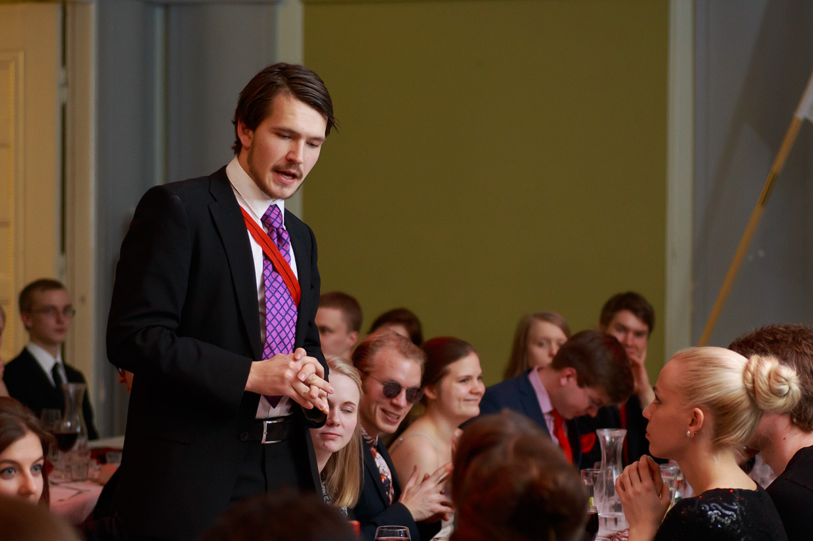

Sitsit ovat pohjoismainen akateeminen pöytäjuhla, joissa syödään, lauletaan juomalauluja ja pidetään puheita. Tämä kirjoitus on laulunjohtaja Sebastian Veijolan (kuvassa) kertomus Moodi ry:n 48v synttärisitseistä. Kuvat on ottanut Tapani Linnaluoto.

Osa 1, “The Decision”
“Olin miettinyt, että laulunjohtajana toimiminen olisi siistiä. On kantava ääni ja tykkään huomiosta, muutahan ei vaadita. Viime vuoden loppupuolella ilmoitin olevani käytettävissä. Vasta joskus synttärisitsiviikolla olin yhteydessä toiseen laulunjohtajaan Pihlaan ja mietimme, pitäisikö meidän suunnitella jotenkin lauantaita. No, ei jaksettu. Joku käsitys oli aikatauluista ja perinteistä. Puheenjohtajan puhe ja hallituksen esittely, kuinka paljon nyt sitseillä voi olla ohjelmaa? Kuinka paljon pitäisi selostaa etikettiä? Silleen sopivasti. Mutta, niinku mitä tarkalleen? No, sillee sopivasti.
Asia selvä. Lisää sumplittavaa tuli kun Moodin kulisseissa kehiteltiin puheenjohtajalle oma kappale, (M)oodi Tommille. Laulu painettiin ylimääräisille laululärpäkkeille, jotka piti jotenkin saada sitsaajille ilman, että puheenjohtaja Tommi Mäklin huomaa asiaa. Metodiksi valikoitui penkkien alle teippaaminen. Perjantai-illan hämärinä tunteina piiskaavassa sateessa kävin kalliosta kerrostalon rappukäytävästä hakemassa tulenarat laululärpäkkeet. Tunsin itseni salamurhaajaksi jonka tehtävänä oli räjäyttää Moodi. Sitsikuume nousi.”
Osa 2, “The Arrival”
“Sitsipäivä. Herään hyvissä ajoin, mutta makaan sängyssä kolme tuntia. Menen suunnitellusti salille, joskin pari tuntia myöhässä. Tajuan, että on älytön kiire. Oliko meillä joku teema? 60-luku. Mitä se tarkoittaa? Joka kerta kun joku on jossain kysynyt asiaa, on vastaus ollut “Katso Mad Meniä”. Ei ole aikaa. Googlaan nopeasti hakusanoilla “60s fashion men”. Kuvahaun perusteella ne pukeutui ihan normaalisti. Pakkaan mukaan myös puuhapussin. Oma laulukirja, kynä, salaiset lärpäkkeet, kannun kunnianauha, hiusvaha… pärjääkö näillä? Pakko pärjätä, on kiire.
Yksitoista yli 17 olen arabiankadun ja hämeentien risteyksessä optimoimassa: ratikka vai bussi? Jään risteykseen odottamaan että näkisin jomman kumman tulevan. Kaukana vilkahtaa bussin valot, lähden kävelemään rivakasti seuraavalle dösärille. Dösällä kuitenkin kestää, kestää useampi minuutti? Kun olen pysäkillä niin ratikka kuitenkin tulee ennen. Tunnen kuinka otsaan tulee verta, syke nousee ja kiroan itsekseni primitiivisillä kirosanoilla: vittusaatana.
Bussi tulee, mutta se onkin 74! Tätä en ottanut huomioon. Nousen 74:een ja mietin uutta strategiaa, pitäisikö Sörkässä vaihtaa metroon? Peliteoriasta olen oppinut että tällaisia päätöksiä tehdessä aika on puolellasi. Kun maltat odottaa, saat enemmän tietoa, kun on enemmän tietoa, voi tehdä parempia valintoja. Lykkään päätöstä Sörnäisiin. Kurvissa hyppään, mietin 2 sekuntia ja päätän kuitenkin kävellä metroon. Kun olen William K:n kohdalla, tuleekin 68 näkökenttään. “Perkele!”, nopea reagointi ja jalat alle. Lähden juoksemaan casualisti ykköset päällä pysäkille.
Hyppään bussiin ja katson kelloa, 17.24, ihan hyvin tämä menee. Unicafe Ylioppilasaukio ei jostain syystä myy panineja enää lauantaina klo 17.35. Pakko mennä forumin mäkkäriin ja hakea jotain mukaan.”
Osa 3, “The Operation”
“Istun Beauvoiriin ja alan syömään. Menen Mikhael Koufoksen viereen spekuloimaan millä strategialla saadaan lärpäkkeet penkkien alle. Mikhael ei jostain syystä vastaa mitään: Tommi oli tullut selkäni taakse. No, ei paljastuttu. Pitää skarpata.
Alkuperäinen idea oli: että joku ottaa avaimet, sulkee Alinan ja teippaa lärpäkkeet. Avaimet on kuitenkin Tommilla eikä hän luovu niistä ilman hyvää syytä… Taktiikka vaatii muutosta: järjestetään tervehdykset niin, että Tommi ei niitä vastaanottaessaan näe saliin ja tervehdysten aikana nakkilaiset käyvät teippaamassa ne.
Menen keittiöön selvittämään monta nakkilaista meillä on ja kertomaan tilanteesta. Juuri väärällä hetkellä ilmestyy Tommi kuvaan ja kysyy, onko kaikki hyvin. On. Ärsyttävää kun pitää huijata noin fiksua ja skarppia tyyppiä. Tommi on äärimmäisen älykäs mies ja nyt kun on ensimmäiset sitsit hänen pj-kaudellaan, on hän selvästi normaaliakin valppaampi. Saan kuitenkin viestin perille ja 2 nakkilaista tulee Beauvoiriin kuuntelemaan ohjeet. Homma taitaa onnistua.
Suunnitelman mukaan puolelta aloitetaan tervehdykset. Kello on 18.27, olen jännittynyt ja stressaantunut. Jotkut huomaavat ja saan huvittunutta sympatiaa. Viime vuonna laulunjohtajana toiminut Tuomo Nieminen antaa isälliset taputukset. En ole juonut tarpeeksi vettä. Alkumaljankin holittomana. Suljen Alinan oven, kilistän, ja pyydän hiljaisuutta. Esittelen itseni ja kerron kuinka nyt alkaa esittelyt.
Samalla Alinan ovi aukeaa ja hallituslaiset saapuvat riviin. Sydän jättää lyöntejä välistä, toivottavasti lärpäkkeitä tuolien alle teippaavat nakkeilijat eivät jää kiinni. Suljen Alinan oven uusiksi vain, jotta se voitaisiin avata uusiksi, kun lisää kehällä olevia hallituslaisia tulee Alinasta hallin puolelle.
Mutisen jotain tyyliin “Tulkaa nyt vittuun sieltä”. Sen jälkeen kurkkaan Alinaan sisään ja varmistan, ettei siellä enää ole sinne kuulumattomia. Asettaudun selkä suljettua Alinan ovea vasten. Hallitus tulee oikealle puolelleni, yleisö jää vasemmalle puolelleni ja väliin jää tyhjä tila tervehtijöille.”
Osa 4, “The Ceremony”
“Muutaman tervehdyksen jälkeen tunnelma muuttuu vähemmän jäykäksi. Tallotut jallupullojen korkit kerääntyvät viereeni kasaksi. Onneksi en ole enää hallituksessa. Yritän bongailla yleisöstä ihmisiä.
Jarkko Nissinenkin tuli VOO:sta, sepä mukavaa. Mustalla silmällä varustettu emeritus-pj Heikki Hyhkö lymyilee oven vieressä. Ky-mpillä on runsaslukuinen edustajisto. Vaikuttavin tervehdys tulee Moodin pj- kerholta, paikalla oli 7 vanhaa puheenjohtajaa! Ennen sitsejä laskettiinkin, että sitsaajista yli 10% (8/74) on joko nykyisiä tai entisiä moodin puheenjohtajia.
Pääsen itse pitämään viimeisen tervehdyksen KTTO:n puolesta. Olen joviaali, enkä tallo korkkia. Tervehdykset ohi, kerron juhlaväelle että noin 5 minuuttia aikaa minglailla* niitä näitä, sen jälkeen kutsutaan pöytiin. Stressi helpottaa, menen keittiöön juomaan neljä lasia vettä.
Sitsit alkoivat ja loppuivat. Tajusin vasta jälkeenpäin, että ennen kuin alkaa laulamaan Helan Gårin, pitäisi aloittaa se “tsy tsy, tsy tsy” sävel. Alkuruoka meni hyvin, vaikka jossain vaiheessa aloin miettiä, että pitäisikö puuttua asiaan, kun jengi tuntuu olevan ihan pihalla säkeistöistä.
Pääruoka meni mallikkaasti. Tommin puhe sai raikuvat aplodit ja salassa loppuun asti pysynyt (M)oodi Tommille samoin. Jossain vaiheessa iltaa emeritus-pj:t Haimi ja Eikku pitivät jonkinlaisen mainospuheen. Muistan vain, että toukokuussa tapahtuu jotain. Jatkossa Moodin kannattaisi laskuttaa tällaisista.
Jälkiruokakin meni leppoisasti. Hallitusesittelyn aikana urheiluvastaava Patrik Lauha jakoi kunniaa edellisen päivän säbäpelissä kolme maalia tehneelle Tuomas Reiterälle, muttei 4 maalia syöttäneelle meikäläiselle. En syötä enää ens pelissä.”
Osa 5, “The Aftermath”
“Kaikilla oli todella hauskaa, ruoka oli hyvää ja jengiä oli paikalla todella hyvin. Jonkun tiedon mukaan 74 osallistujaa on enemmän kuin koskaan aiemmin Moodin omilla sitseillä. Sain kuulla kehuja kuinka johdin laulua hyvin, mikä tietty lämmitti mieltä. Sitsien jälkeen aloin kunnolla rentoutua.
Vielä yhden aikaan Weber oli täynnä juhlijoita. Humanistit kutsuivat meidät jatkojen jatkoille uuden viidenteen kerrokseen. Meininki siellä oli pettymys, vaikka oli hauska ottaa snappeja parvekkeelta. Tulin kotiin puoli viisi. Söin iltapalaksi sipsejä.
Selasin laulukirjaani ja tulin entistä vahvemmin johtopäätökseen: josset osaa kirjoittaa selvää käsialaa, niin älä kirjoita kenenkään lauluvihkoon. Joku oli kirjoittanut lauluvihkooni “Jee oli tosi hauska tutustuu, oon kuullu susta tosi paljon! :)” se oli hämmentävin uusi viesti, koska minulla ei ole mitään hajua kuka sen on kirjoittanut.** Muistaakseni en tutustunut kehenkään uuteen ihmiseen tänä iltana, tai ainakaan sellaiseen joka olisi kirjoittanut lauluvihkooni…”
*Toimituksen huomio: todella, käytetty sana oli “minglailla”.
**Toimituksen huomio 2: Jos haluat paljastaa itsesi Sebastianille, ota yhteyttä tämän artikkelin kommenttiosiossa.